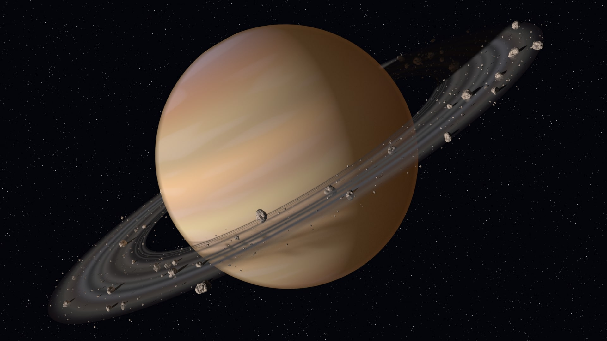
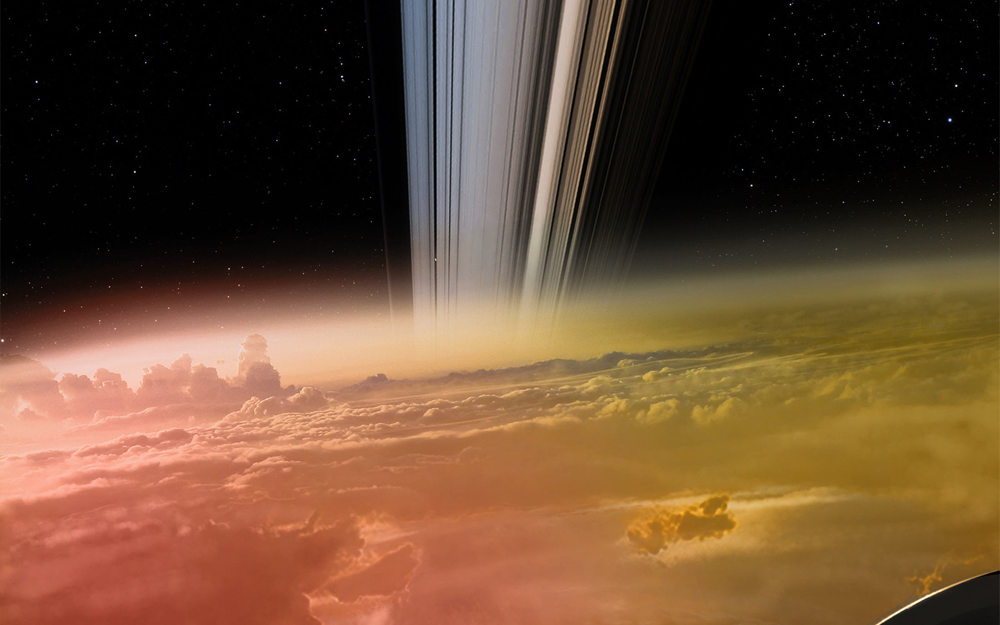
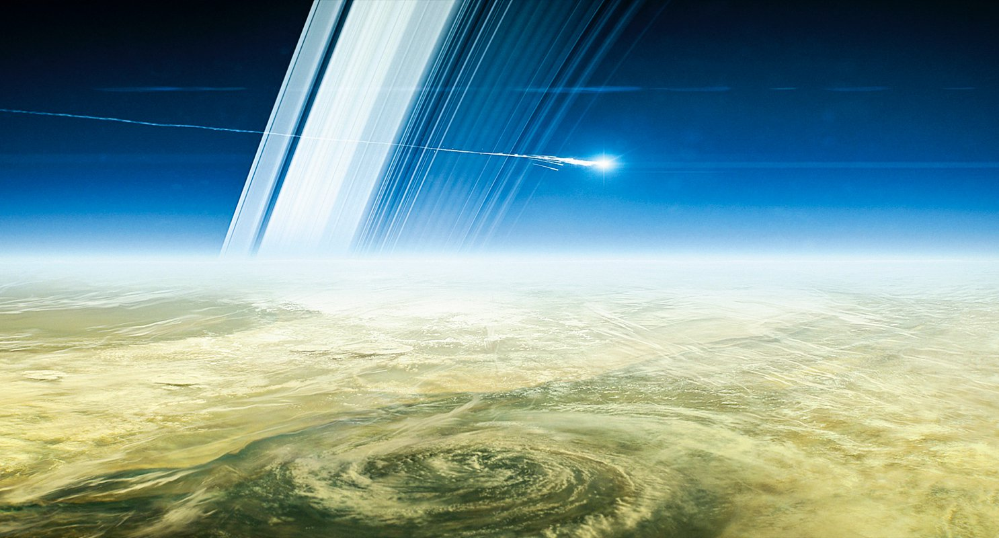
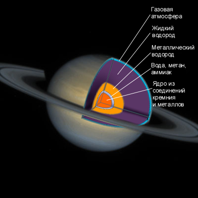
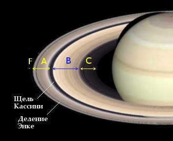
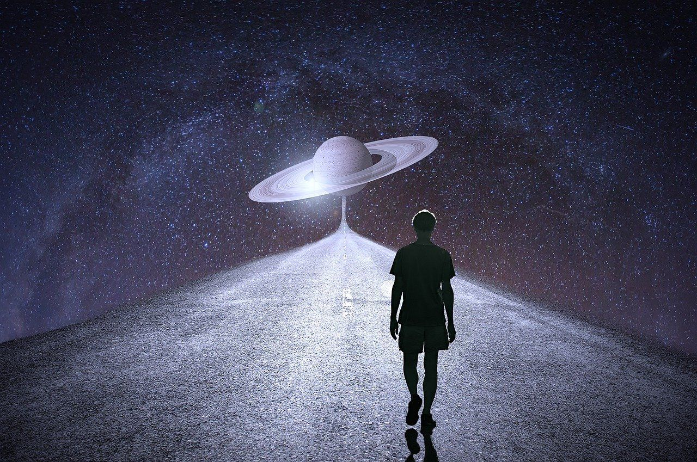

Сатурн
×
Сатурн, если считать по удалённости от Солнца, является шестой планетой, а если по величине, то второй. Это газовый гигант, масса которого превосходит массу Земли в 95 раз. Он имеет самую низкую плотность из всех планет и даже меньшую, чем у воды. Планета Сатурн, является, пожалуй, одной из самых красивых и загадочных. Её вид поражает и манит. Сказочные кольца создают ощущение чего – то необычного, благодаря им, его невозможно спутать с другой планетой, он единственный в своём роде. Что означает название Сатурна? Известно, что оно происходит от имени Бога Кроноса, который повелевал могучими титанами в греческой мифологии. Планета получила данное название, благодаря своим гигантским размерам и необычному виду.

Атмосфера
×
В атмосфере Сатурна бушуют сильные ветра. Их скорость настолько велика, что составляет около 500 км/ч, а порой, достигает и 1500 км/ч. Согласитесь, довольно неприятное явление, но с Земли (если смотреть в телескоп) они выглядят очень красиво. На планете бушуют настоящие циклоны, самым большим из которых является Большой белый овал. Он получил это название за внешний вид, и представляет из себя мощнейший антициклон, систематически появляющийся на поверхности примерно один раз в тридцать лет. Размеры его просто гигантские, и составляют около 17 тысяч километров.Атмосфера планеты стоит в основном из водорода и гелия, имеется совсем немного немного азота. В верхних слоях наблюдаются аммиачные облака.
Имеются и такие образования, как пятна. Правда они не так заметны, как, например, у Юпитера, но всё — таки, некоторые довольно большие и достигают около 11 тыс. км. То есть, довольно внушительны. Есть и светлые пятна, они намного меньше, всего около 3 тыс. км, а так же, коричневые, размеры которых составляют 10 тыс. км.
Имеются и полосы, которые, как предполагают учёные, появились от перепада температур. Их довольно много и именно в центре полос дуют самые мощнейшие ветра.
В верхних слоях атмосферы очень холодно. Температура колеблется от –180 °С до –150 °С. Хоть это и страшный холод, но, если бы внутри планеты не было ядра, обогревающего и дающего тепло, то температура атмосферы была бы заметно ниже, ведь Солнце же далеко.

Поверхность
×
У Сатурна нет твёрдой поверхности, а то, что мы видим, это только верхушки облаков. Их верхний слой состоит из замёрзшего аммиака, а нижний — из аммония. Чем ближе к планете, тем плотнее и горячее водородная атмосфера.

Внутреннее строение
×
Внутреннее строение очень схоже с таковым у Юпитера. Ученые предполагают, что в центре планеты находится большое силикатно – металлическое ядро. Так, на глубине около 30 000 км. температура составляет 10000 °С, а давление около 3 млн. атмосфер. В самом ядре, давление ещё более высокое, так же как и температура. В нём и находится источник тепла, согревающий всю планету. Сатурн выделяет больше тепла, чем получает от солнца.Ядро окружено водородом, находящимся в металлическом состоянии, а над ним, уже ближе к поверхности, слой жидкого молекулярного водорода, переходящего в свою газовую фазу, примыкающую к атмосфере. Магнитное поле планеты имеет уникальную особенность, которая заключается в совпадении с осью вращения планеты. У магнитосферы Сатурна симметричный вид, но радиационные полюса правильной формы и имеют пустоты.

Кольца
×
Первым, кто увидел кольца, был великий Галилео Галилей, и было это аж в 1610 году. Уже позже, при помощи более мощного телескопа, голландский астроном Гюйгенс, предположил, что Сатурн имеет два кольца: одно тонкое и одно плоское. На самом же деле, их на много больше, и состоят они из многочисленных кусочков льда, камней, самых разных размеров, сметающих всё на своём пути. Кольца просто огромные. Самое большое из них, превосходит размеры планеты в 200 раз. По сути, это мусор, который остался от разрушенных комет, спутников и иных космических отходов. Интересно, что кольца тоже имеют название. Они расположены в алфавитном порядке, то есть это кольцо А, В, С и так далее.
.jpg)
Спутники
×
Самые крупные спутники планеты — Титан, Феба, Энцелад, Мимас, Тефия, Диона, Рея, Гиперион и Япет. Они, кроме Фебы, вращаются синхронно и постоянно обращены одной стороной относительно Сатурна. Многие исследователи предполагают, что Титан, очень похож по своему строению и некоторым другим параметрам с молодой Землёй (какой она была 4.6 млрд. лет тому назад).
Здесь и условия более благоприятны, и возможно, имеются простейшие микроорганизмы. Но пока что, подтвердить это не представляется возможным.

Путешествие на Сатурн
×
Если бы мы сейчас отправились на эту удивительную планету, то увидели бы завораживающую картину. Представьте себе, гигантский Сатурн, вокруг которого на огромной скорости вращаются многочисленные остатки планет, куски комет и льда, ведь именно это и представляет из себя тот самый пояс – кольцо, которое так красиво выглядит с Земли. На самом деле, всё не так романтично. А над планетой парят облака, плотно покрывающие всю поверхность. Местами, бушуют дикие ветра, проносясь на огромной скорости, которая быстрее, чем скорость звука на Земле.Временами здесь бывают молнии, а значит, мы могли бы попасть под их воздействие, тем более опасно, что укрыться негде. В общем, Сатурн, довольно опасное место для нахождения человека, как бы надёжно он ни был защищён. Вас может унести ураган или попасть молния, тем более, не забывайте, что это газообразная планета, со всеми вытекающими отсюда последствиями.